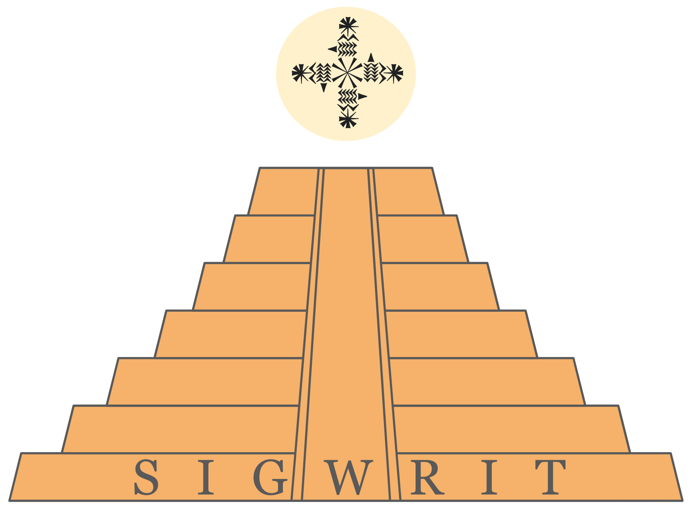

|  |
ACL Special Interest Group on Writing Systems and Written Language (SIGWrit) The purpose of SIGWrit is to promote a better understanding of the
relationship between language in its spoken or signed form, and
language in its written form, as well as to promote research on
computation and written language. |
Events sponsored by the SIG will focus on research addressing the relationship between written and spoken language, the properties of written language, the ways in which writing systems encode language, and applications specifically focused on characteristics of writing systems.
Most work on NLP focuses on language in its canonical written form. This has often led researchers to ignore the differences between written and spoken language or, worse, to conflate the two. Instances of conflation are statements like "Chinese is a logographic language" or "Persian is a right-to-left language", variants of which can be found frequently in the ACL anthology (Gorman & Sproat, 2023). These statements confuse properties of the language with properties of its writing system. Ignoring differences between written and spoken language leads, among other things, to conflating different words that are spelled the same (e.g., English bass), or treating as different, words that have multiple spellings (e.g., Japanese umai 'tasty', which can be written 旨い, うまい, ウマい, or 美味い).
Furthermore, methods for dealing with written language issues (e.g., various kinds of normalization or conversion) or for recognizing text input (e.g. OCR & handwriting recognition or text entry methods) are often regarded as precursors to NLP rather than as fundamental parts of the enterprise, despite the fact that most NLP methods rely centrally on representations derived from text rather than (spoken) language. This general lack of consideration of writing has led to much of the research on such topics to largely appear outside of ACL venues, in conferences or journals of neighboring fields such as speech technology (e.g., text normalization) or human-computer interaction (e.g., text entry).
Topics of interest covered within the scope of the SIG and its sponsored events will include (but not be limited to): text entry; text tokenization; disambiguation of abbreviations and homographs; grapheme-to-phoneme conversion, transliteration, and diacritization; text normalization for speech and for processing “informal” genres of text; the computational study of literary devices involving writing systems, such as eye dialect; information-theoretic and machine-learning approaches to decipherment; methods for specialized text genres, e.g., clinical notes; optical character (incl. handwriting) recognition and historical document processing; orthographic representation for unwritten languages; spelling error detection and correction; script normalization and encoding; and writing system typology and its relevance to speech and language processing.
SIGWrit Constitution